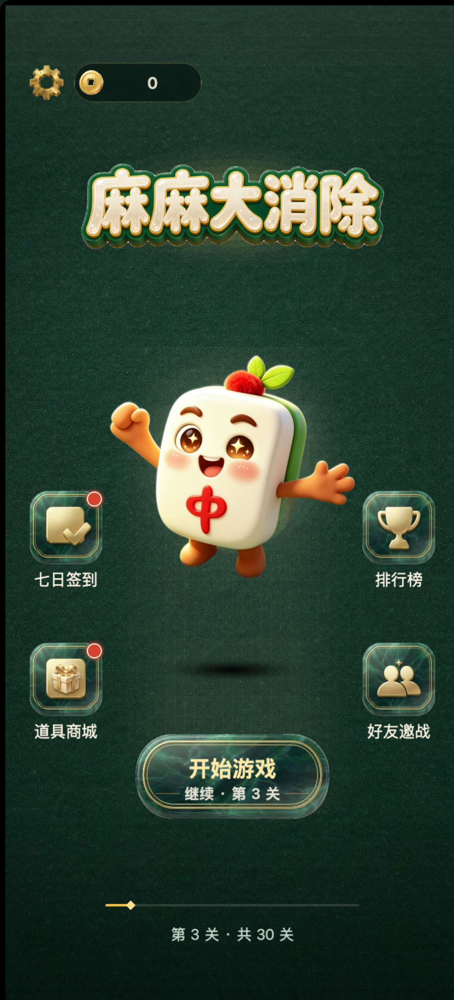
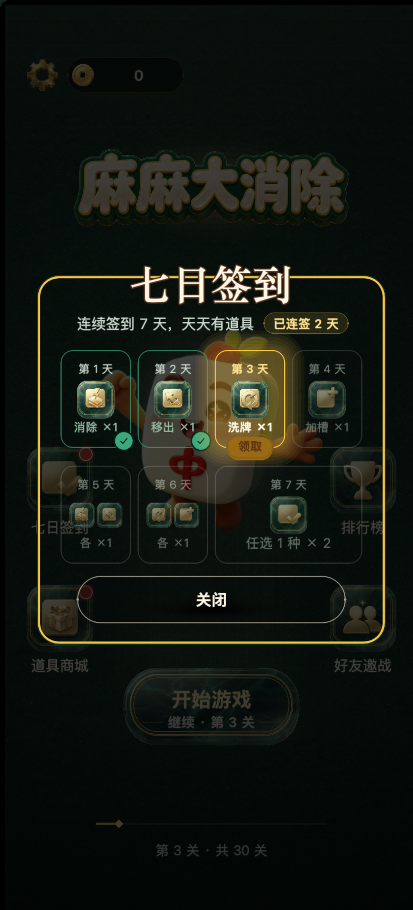
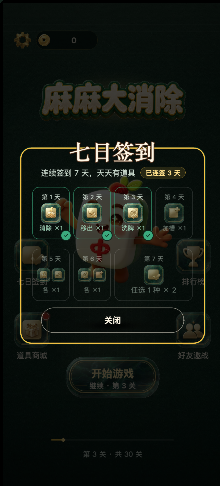
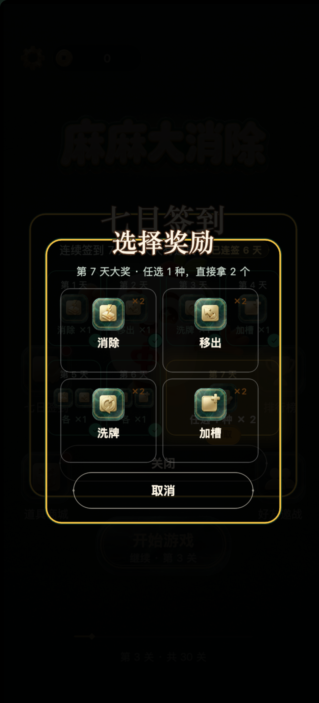
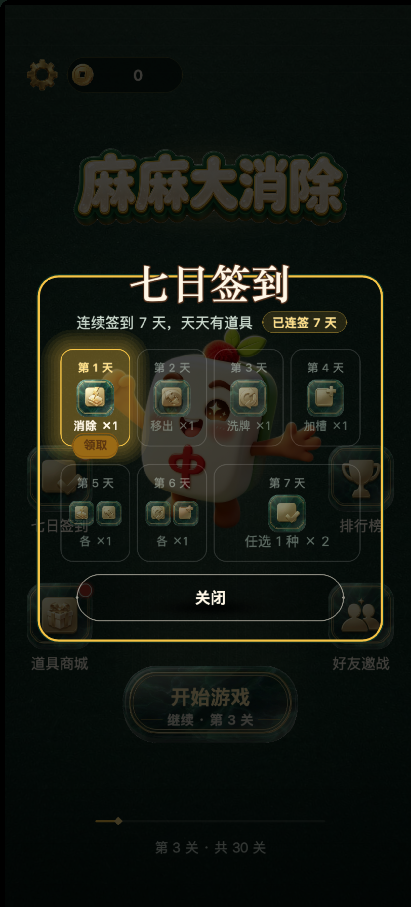
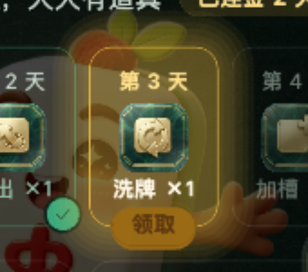
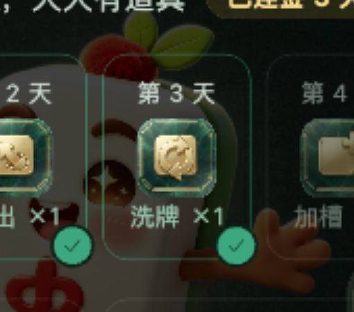
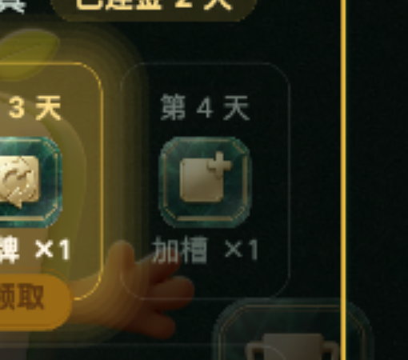

同视口取证：421×927 @3（= 真机 1264×2780）。全部走真实构建
+ 真实鼠标，没有手改源码造状态；每个状态各开一次浏览器，存档由启动前注入的种子脚本铺好。
板上的几何数字全部是从运行中的场景里量出来的，不是照代码抄的。
83 × 42 设计 px（金色胶囊，文本「领取」21 号加粗，字色 #5C3610）SignCell_n；
第 7 天那个宽格（266×176）也是挂它自己。x = 0，与格子同心）。
实测：第 3 天 x=0 · parent=SignCell_3；
第 7 天（宽格）x=0 · parent=SignCell_7 —— 宽格也是它自己格的中线，
不是整排的中线。y = -86；
格高 176 ⇒ 格底在 -88，胶囊底边在 -107）。
实测：三个状态全部 y=-86 · 越过 19。.claim{ bottom:-22px }，
但那是相对格子的 padding box 量的，而 .cell 自带 border:3px ⇒
视觉上越过可见外沿只有 22-3=19。
引擎侧 strokeRoundRect 的描边不吃尺寸，所以必须取 19 才对得上稿子。126×176 + 胶囊本身
（因为胶囊有 19px 露在格沿外，只注册格子的话那 19px 点不动）。
胶囊是格子的子节点，事件会冒泡 ⇒ 一次点击会走到两遍，
靠 _signBusy + signDayToday() 双闸挡掉第二遍。1.8s = 0.9 亮 + 0.9 暗。发光用由外向内叠实心圆角矩形（7 层，每层外扩 6）做的 ——
嵌套实心图形累积 alpha 必然内深外浅，正好就是外发光的方向。| 格态 | 视觉 | 可点 | 点下去发生什么 |
|---|---|---|---|
| 未到（future） | 整格压到 52% 透明（opacity 133/255）+ 暗白描边 + 文字转灰绿。 实测 无勾、无呼吸光。 |
不可点 | 什么都不发生（整格热区在，但状态不是 today ⇒ 直接返回） |
| 已领（done） | 青玉底压暗一档 + 右下角青玉勾（直径 32，圆心落在格子右下角竖轴上）。 实测 有勾、无呼吸光、无胶囊。 | 不可点 | 存档逐字段不动（已领的格子不可重复领 —— 这条有专门的负控断言） |
| 当天（today） | 金色描边 + 暖金呼吸 + 骑边「领取」胶囊 + 日期/文案转金加粗。 全屏唯一在动的东西。 | 唯一可点 | 立即发货：道具入库 + signDate=本地今天 + signStreak 推进 ⇒
格子当场翻成「已领」（勾出现），胶囊整颗消失，
副标题「已连签 n 天」跟着翻新，出音效 + toast「签到第 n 天 · 洗牌 ×1 已到账」，
格子缩放 1.12 回弹。第 7 天例外：先弹「四选一」二级弹层；点取消 ⇒ 不推进进度、也不发货。 |





这一组是同一台机位（都对着 SignCell_3）裁的，
所以"胶囊在 / 勾在 / 都没有"三张可以直接叠着比。



openSignIn() 里算一次；
领奖走的是 refreshSignCells()，而它只重画七格、不碰副标题行。buildSignSubRow()，由 refreshSignCells() 一并调用。
是"整行重建"而不是"改一下 Label 的字"：这一行是整体居中的
（文字被胶囊往左顶半颗胶囊宽），而胶囊宽随数字变化；另外从未签到时
signStreakLive()=0 ⇒ 整颗胶囊不画，所以还要处理"从无到有"。已连签 3 天。signStreak 在引擎里是"本轮已领格数"（0~7），被直接拿来当"已连签 n 天"显示。
于是满 7 天循环回第 1 天时，胶囊显示 「已连签 7 天」（这是实话 —— 确实连签了 7 天），
但再领掉新的第 1 格之后会变成「已连签 1 天」，数字往回跳。